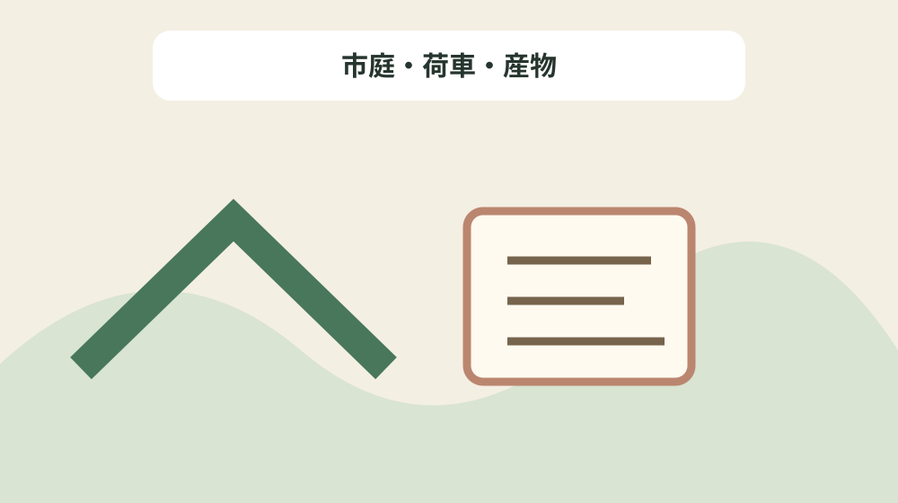
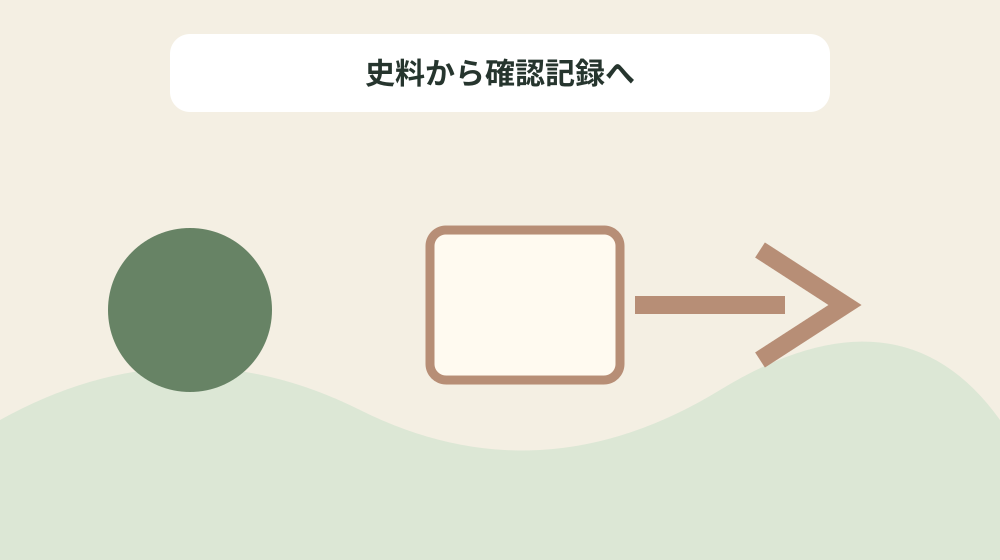

近世森町の産業を産物・職人・市・輸送先で整理する
結論：産物、製造者、取引場所、運搬先を史料単位で整理することで、資料の記載と現在の状態を混同しない近世産業産物台帳になります。
近世産業産物台帳で解く問い
森町公式資料には「森町村は、秋葉街道の主要な宿場であり、北遠の茶・木材・椎茸などの集散地(しゅうさんち)として、人や物の移動が多かった。」と記されています。近世森町の産業を産物・職人・市・輸送先で整理するでは、この記載を近世産業産物台帳の一行にし、産物、製造者、取引場所、運搬先を史料単位で整理するための根拠として扱います。資料名と確認日を先に書き、後から説明だけが独り歩きしないようにします。
同じページで確認できる「(2)大石屋土蔵。土蔵は、盗難や火災に備えて、四面を漆喰(しっくい)などで塗り固めた倉庫である。 現在も町内に古い土蔵をいくつか見ることができる。 土蔵の数は、その富勢(ふせい)を示すものとなり、宿場町として栄えた森町村の様子をうかがうことができる。 大石家は、屋敷内に5つの土蔵を持つ町内でも有数の商家で、現在でも母屋とともに当時の繁盛ぶりが重厚な造りによってしのばれる。 (森町森 本町)」は、前の事実と似ていても別の対象です。市庭・荷車・産物を読み解くときは、資料の掲載順ではなく、名称・年代・場所・根拠の対応を見ます。写真、家族の記憶、公的資料を三列に分け、食い違いを未確認として残します。
近世産業産物台帳では「また、月6回の市が立ち、市日以外は山方へ出入りし、古着類をはじめ各種の品を売りさばく、農閑期を利用して商売を行う者もいた。」の確認欄と「土蔵の数は、その富勢(ふせい)を示すものとなり、宿場町として栄えた森町村の様子をうかがうことができる。」の照会欄を分けます。公式本文が述べていない現況や公開可否は未確認と書き、家族の記憶には話者と聞取日を添えます。旧記録を消さず、回答日と確認先を付けた新しい行を追加します。
公式本文から確定できる十二事実
森町公式資料には「1824年(文政7年)には茶の販路独占と不正取引をめぐる訴訟も引き起こされている。」と記されています。近世森町の産業を産物・職人・市・輸送先で整理するでは、この記載を近世産業産物台帳の一行にし、産物、製造者、取引場所、運搬先を史料単位で整理するための根拠として扱います。主語と対象を原文へ戻し、似た地名や人物を同じものとして扱いません。
同じページで確認できる「(5)古手番附帳。本町山中家は、村役人を勤めた商家で、古着に関する多くの史料を伝えている。 (森町森 個人所蔵)」は、前の事実と似ていても別の対象です。市庭・荷車・産物を読み解くときは、資料の掲載順ではなく、名称・年代・場所・根拠の対応を見ます。資料の利点は典拠へ戻れることにあり、現在の状態を保証するものではありません。
近世産業産物台帳では「(2)大石屋土蔵。土蔵は、盗難や火災に備えて、四面を漆喰(しっくい)などで塗り固めた倉庫である。 現在も町内に古い土蔵をいくつか見ることができる。 土蔵の数は、その富勢(ふせい)を示すものとなり、宿場町として栄えた森町村の様子をうかがうことができる。 大石家は、屋敷内に5つの土蔵を持つ町内でも有数の商家で、現在でも母屋とともに当時の繁盛ぶりが重厚な造りによってしのばれる。 (森町森 本町)」の確認欄と「(6)縞見本。三倉の小野家は山間地の商人であった。 これは、山の産物を町場に出し、町場の産物が山間地にも多く入ってきたことを知る資料である。 (森町三倉 個人所蔵)」の照会欄を分けます。公式本文が述べていない現況や公開可否は未確認と書き、家族の記憶には話者と聞取日を添えます。不動産の道路、境界、登記、建物安全性は、この歴史資料とは別に調べます。
近世産業産物台帳の列を決める
森町公式資料には「土蔵の数は、その富勢(ふせい)を示すものとなり、宿場町として栄えた森町村の様子をうかがうことができる。」と記されています。近世森町の産業を産物・職人・市・輸送先で整理するでは、この記載を近世産業産物台帳の一行にし、産物、製造者、取引場所、運搬先を史料単位で整理するための根拠として扱います。年号の横へ出来事を示す動詞を残し、制作年と伝来年を一つにしません。
同じページで確認できる「1824年(文政7年)には茶の販路独占と不正取引をめぐる訴訟も引き起こされている。」は、前の事実と似ていても別の対象です。市庭・荷車・産物を読み解くときは、資料の掲載順ではなく、名称・年代・場所・根拠の対応を見ます。不足する情報を空欄の理由として残し、推測で表を完成させません。
近世産業産物台帳では「(3)大石家看板。大石家は、1825年(文政8年)に古着商いをはじめた。 小袖・羽織・布団や一般の古着だけでなく諸宗派の袈裟なども扱っており、江戸や三陸方面にも広く販路を確保していた。 (森町森 個人所蔵)」の確認欄と「(1)古い街並と三島山の絵図。森町は、掛川宿から秋葉山にいたる秋葉街道の沿道にあたる。 商家・旅籠も多くあったことから、にぎわいをみせていた。 町内には現在も当時をしのばせる家並みや土蔵をはじめ、古い街並みを見ることができる。 (森町森 梅林院所蔵)」の照会欄を分けます。公式本文が述べていない現況や公開可否は未確認と書き、家族の記憶には話者と聞取日を添えます。まだ売ると決めていない段階でも、資料の所在と根拠を家族で共有できます。

年代の種類を動詞で分ける
森町公式資料には「(4)大石家土蔵。観音開きの窓は幾重にも塗られた手の込んだものである。 湿気を除けるために開き戸の内には横引きの内戸も付けている。 (森町森 個人所有)」と記されています。近世森町の産業を産物・職人・市・輸送先で整理するでは、この記載を近世産業産物台帳の一行にし、産物、製造者、取引場所、運搬先を史料単位で整理するための根拠として扱います。所在地が示されても見学可能とは限らないため、公開条件を別に確認します。
同じページで確認できる「(3)大石家看板。大石家は、1825年(文政8年)に古着商いをはじめた。 小袖・羽織・布団や一般の古着だけでなく諸宗派の袈裟なども扱っており、江戸や三陸方面にも広く販路を確保していた。 (森町森 個人所蔵)」は、前の事実と似ていても別の対象です。市庭・荷車・産物を読み解くときは、資料の掲載順ではなく、名称・年代・場所・根拠の対応を見ます。問い合わせは対象名、参照ページ、確認済みの事実、知りたい一点に絞ります。
近世産業産物台帳では「(6)縞見本。三倉の小野家は山間地の商人であった。 これは、山の産物を町場に出し、町場の産物が山間地にも多く入ってきたことを知る資料である。 (森町三倉 個人所蔵)」の確認欄と「(4)大石家土蔵。観音開きの窓は幾重にも塗られた手の込んだものである。 湿気を除けるために開き戸の内には横引きの内戸も付けている。 (森町森 個人所有)」の照会欄を分けます。公式本文が述べていない現況や公開可否は未確認と書き、家族の記憶には話者と聞取日を添えます。最初の一行から始め、十二事実を同時に確定しようとしないことが継続の要点です。
場所・所蔵・公開条件を混同しない
森町公式資料には「森町村は、秋葉街道の主要な宿場であり、北遠の茶・木材・椎茸などの集散地(しゅうさんち)として、人や物の移動が多かった。」と記されています。近世森町の産業を産物・職人・市・輸送先で整理するでは、この記載を近世産業産物台帳の一行にし、産物、製造者、取引場所、運搬先を史料単位で整理するための根拠として扱います。写真、家族の記憶、公的資料を三列に分け、食い違いを未確認として残します。
同じページで確認できる「1830年(文政13年)当時の森町村は家数358軒があり、内訳は百姓141軒、商人149軒、旅籠屋4軒、諸職人40軒、医師2軒、座頭2軒という内訳であった。」は、前の事実と似ていても別の対象です。市庭・荷車・産物を読み解くときは、資料の掲載順ではなく、名称・年代・場所・根拠の対応を見ます。旧記録を消さず、回答日と確認先を付けた新しい行を追加します。
近世産業産物台帳では「また、月6回の市が立ち、市日以外は山方へ出入りし、古着類をはじめ各種の品を売りさばく、農閑期を利用して商売を行う者もいた。」の確認欄と「また、月6回の市が立ち、市日以外は山方へ出入りし、古着類をはじめ各種の品を売りさばく、農閑期を利用して商売を行う者もいた。」の照会欄を分けます。公式本文が述べていない現況や公開可否は未確認と書き、家族の記憶には話者と聞取日を添えます。資料名と確認日を先に書き、後から説明だけが独り歩きしないようにします。
良い点
森町公式資料には「1824年(文政7年)には茶の販路独占と不正取引をめぐる訴訟も引き起こされている。」と記されています。近世森町の産業を産物・職人・市・輸送先で整理するでは、この記載を近世産業産物台帳の一行にし、産物、製造者、取引場所、運搬先を史料単位で整理するための根拠として扱います。資料の利点は典拠へ戻れることにあり、現在の状態を保証するものではありません。
同じページで確認できる「土蔵の数は、その富勢(ふせい)を示すものとなり、宿場町として栄えた森町村の様子をうかがうことができる。」は、前の事実と似ていても別の対象です。市庭・荷車・産物を読み解くときは、資料の掲載順ではなく、名称・年代・場所・根拠の対応を見ます。不動産の道路、境界、登記、建物安全性は、この歴史資料とは別に調べます。
近世産業産物台帳では「(2)大石屋土蔵。土蔵は、盗難や火災に備えて、四面を漆喰(しっくい)などで塗り固めた倉庫である。 現在も町内に古い土蔵をいくつか見ることができる。 土蔵の数は、その富勢(ふせい)を示すものとなり、宿場町として栄えた森町村の様子をうかがうことができる。 大石家は、屋敷内に5つの土蔵を持つ町内でも有数の商家で、現在でも母屋とともに当時の繁盛ぶりが重厚な造りによってしのばれる。 (森町森 本町)」の確認欄と「大石家は、屋敷内に5つの土蔵を持つ町内でも有数の商家で、現在でも母屋とともに当時の繁盛ぶりが重厚な造りによってしのばれる。」の照会欄を分けます。公式本文が述べていない現況や公開可否は未確認と書き、家族の記憶には話者と聞取日を添えます。主語と対象を原文へ戻し、似た地名や人物を同じものとして扱いません。
注文したい点
森町公式資料には「土蔵の数は、その富勢(ふせい)を示すものとなり、宿場町として栄えた森町村の様子をうかがうことができる。」と記されています。近世森町の産業を産物・職人・市・輸送先で整理するでは、この記載を近世産業産物台帳の一行にし、産物、製造者、取引場所、運搬先を史料単位で整理するための根拠として扱います。不足する情報を空欄の理由として残し、推測で表を完成させません。
同じページで確認できる「(6)縞見本。三倉の小野家は山間地の商人であった。 これは、山の産物を町場に出し、町場の産物が山間地にも多く入ってきたことを知る資料である。 (森町三倉 個人所蔵)」は、前の事実と似ていても別の対象です。市庭・荷車・産物を読み解くときは、資料の掲載順ではなく、名称・年代・場所・根拠の対応を見ます。まだ売ると決めていない段階でも、資料の所在と根拠を家族で共有できます。
近世産業産物台帳では「(3)大石家看板。大石家は、1825年(文政8年)に古着商いをはじめた。 小袖・羽織・布団や一般の古着だけでなく諸宗派の袈裟なども扱っており、江戸や三陸方面にも広く販路を確保していた。 (森町森 個人所蔵)」の確認欄と「森町村は、秋葉街道の主要な宿場であり、北遠の茶・木材・椎茸などの集散地(しゅうさんち)として、人や物の移動が多かった。」の照会欄を分けます。公式本文が述べていない現況や公開可否は未確認と書き、家族の記憶には話者と聞取日を添えます。年号の横へ出来事を示す動詞を残し、制作年と伝来年を一つにしません。
対案・結論
森町公式資料には「(4)大石家土蔵。観音開きの窓は幾重にも塗られた手の込んだものである。 湿気を除けるために開き戸の内には横引きの内戸も付けている。 (森町森 個人所有)」と記されています。近世森町の産業を産物・職人・市・輸送先で整理するでは、この記載を近世産業産物台帳の一行にし、産物、製造者、取引場所、運搬先を史料単位で整理するための根拠として扱います。問い合わせは対象名、参照ページ、確認済みの事実、知りたい一点に絞ります。
同じページで確認できる「(1)古い街並と三島山の絵図。森町は、掛川宿から秋葉山にいたる秋葉街道の沿道にあたる。 商家・旅籠も多くあったことから、にぎわいをみせていた。 町内には現在も当時をしのばせる家並みや土蔵をはじめ、古い街並みを見ることができる。 (森町森 梅林院所蔵)」は、前の事実と似ていても別の対象です。市庭・荷車・産物を読み解くときは、資料の掲載順ではなく、名称・年代・場所・根拠の対応を見ます。最初の一行から始め、十二事実を同時に確定しようとしないことが継続の要点です。
近世産業産物台帳では「(6)縞見本。三倉の小野家は山間地の商人であった。 これは、山の産物を町場に出し、町場の産物が山間地にも多く入ってきたことを知る資料である。 (森町三倉 個人所蔵)」の確認欄と「(2)大石屋土蔵。土蔵は、盗難や火災に備えて、四面を漆喰(しっくい)などで塗り固めた倉庫である。 現在も町内に古い土蔵をいくつか見ることができる。 土蔵の数は、その富勢(ふせい)を示すものとなり、宿場町として栄えた森町村の様子をうかがうことができる。 大石家は、屋敷内に5つの土蔵を持つ町内でも有数の商家で、現在でも母屋とともに当時の繁盛ぶりが重厚な造りによってしのばれる。 (森町森 本町)」の照会欄を分けます。公式本文が述べていない現況や公開可否は未確認と書き、家族の記憶には話者と聞取日を添えます。所在地が示されても見学可能とは限らないため、公開条件を別に確認します。

家族に残す確認記録
森町公式資料には「森町村は、秋葉街道の主要な宿場であり、北遠の茶・木材・椎茸などの集散地(しゅうさんち)として、人や物の移動が多かった。」と記されています。近世森町の産業を産物・職人・市・輸送先で整理するでは、この記載を近世産業産物台帳の一行にし、産物、製造者、取引場所、運搬先を史料単位で整理するための根拠として扱います。旧記録を消さず、回答日と確認先を付けた新しい行を追加します。
同じページで確認できる「(4)大石家土蔵。観音開きの窓は幾重にも塗られた手の込んだものである。 湿気を除けるために開き戸の内には横引きの内戸も付けている。 (森町森 個人所有)」は、前の事実と似ていても別の対象です。市庭・荷車・産物を読み解くときは、資料の掲載順ではなく、名称・年代・場所・根拠の対応を見ます。資料名と確認日を先に書き、後から説明だけが独り歩きしないようにします。
近世産業産物台帳では「また、月6回の市が立ち、市日以外は山方へ出入りし、古着類をはじめ各種の品を売りさばく、農閑期を利用して商売を行う者もいた。」の確認欄と「(5)古手番附帳。本町山中家は、村役人を勤めた商家で、古着に関する多くの史料を伝えている。 (森町森 個人所蔵)」の照会欄を分けます。公式本文が述べていない現況や公開可否は未確認と書き、家族の記憶には話者と聞取日を添えます。写真、家族の記憶、公的資料を三列に分け、食い違いを未確認として残します。
現地確認と権利資料を分ける
森町公式資料には「1824年(文政7年)には茶の販路独占と不正取引をめぐる訴訟も引き起こされている。」と記されています。近世森町の産業を産物・職人・市・輸送先で整理するでは、この記載を近世産業産物台帳の一行にし、産物、製造者、取引場所、運搬先を史料単位で整理するための根拠として扱います。不動産の道路、境界、登記、建物安全性は、この歴史資料とは別に調べます。
同じページで確認できる「また、月6回の市が立ち、市日以外は山方へ出入りし、古着類をはじめ各種の品を売りさばく、農閑期を利用して商売を行う者もいた。」は、前の事実と似ていても別の対象です。市庭・荷車・産物を読み解くときは、資料の掲載順ではなく、名称・年代・場所・根拠の対応を見ます。主語と対象を原文へ戻し、似た地名や人物を同じものとして扱いません。
近世産業産物台帳では「(2)大石屋土蔵。土蔵は、盗難や火災に備えて、四面を漆喰(しっくい)などで塗り固めた倉庫である。 現在も町内に古い土蔵をいくつか見ることができる。 土蔵の数は、その富勢(ふせい)を示すものとなり、宿場町として栄えた森町村の様子をうかがうことができる。 大石家は、屋敷内に5つの土蔵を持つ町内でも有数の商家で、現在でも母屋とともに当時の繁盛ぶりが重厚な造りによってしのばれる。 (森町森 本町)」の確認欄と「1824年(文政7年)には茶の販路独占と不正取引をめぐる訴訟も引き起こされている。」の照会欄を分けます。公式本文が述べていない現況や公開可否は未確認と書き、家族の記憶には話者と聞取日を添えます。資料の利点は典拠へ戻れることにあり、現在の状態を保証するものではありません。
大石の視点
森町公式資料には「土蔵の数は、その富勢(ふせい)を示すものとなり、宿場町として栄えた森町村の様子をうかがうことができる。」と記されています。近世森町の産業を産物・職人・市・輸送先で整理するでは、この記載を近世産業産物台帳の一行にし、産物、製造者、取引場所、運搬先を史料単位で整理するための根拠として扱います。まだ売ると決めていない段階でも、資料の所在と根拠を家族で共有できます。
同じページで確認できる「大石家は、屋敷内に5つの土蔵を持つ町内でも有数の商家で、現在でも母屋とともに当時の繁盛ぶりが重厚な造りによってしのばれる。」は、前の事実と似ていても別の対象です。市庭・荷車・産物を読み解くときは、資料の掲載順ではなく、名称・年代・場所・根拠の対応を見ます。年号の横へ出来事を示す動詞を残し、制作年と伝来年を一つにしません。
近世産業産物台帳では「(3)大石家看板。大石家は、1825年(文政8年)に古着商いをはじめた。 小袖・羽織・布団や一般の古着だけでなく諸宗派の袈裟なども扱っており、江戸や三陸方面にも広く販路を確保していた。 (森町森 個人所蔵)」の確認欄と「(3)大石家看板。大石家は、1825年(文政8年)に古着商いをはじめた。 小袖・羽織・布団や一般の古着だけでなく諸宗派の袈裟なども扱っており、江戸や三陸方面にも広く販路を確保していた。 (森町森 個人所蔵)」の照会欄を分けます。公式本文が述べていない現況や公開可否は未確認と書き、家族の記憶には話者と聞取日を添えます。不足する情報を空欄の理由として残し、推測で表を完成させません。
まとめ
森町公式資料には「(4)大石家土蔵。観音開きの窓は幾重にも塗られた手の込んだものである。 湿気を除けるために開き戸の内には横引きの内戸も付けている。 (森町森 個人所有)」と記されています。近世森町の産業を産物・職人・市・輸送先で整理するでは、この記載を近世産業産物台帳の一行にし、産物、製造者、取引場所、運搬先を史料単位で整理するための根拠として扱います。最初の一行から始め、十二事実を同時に確定しようとしないことが継続の要点です。
同じページで確認できる「森町村は、秋葉街道の主要な宿場であり、北遠の茶・木材・椎茸などの集散地(しゅうさんち)として、人や物の移動が多かった。」は、前の事実と似ていても別の対象です。市庭・荷車・産物を読み解くときは、資料の掲載順ではなく、名称・年代・場所・根拠の対応を見ます。所在地が示されても見学可能とは限らないため、公開条件を別に確認します。
近世産業産物台帳では「(6)縞見本。三倉の小野家は山間地の商人であった。 これは、山の産物を町場に出し、町場の産物が山間地にも多く入ってきたことを知る資料である。 (森町三倉 個人所蔵)」の確認欄と「1830年(文政13年)当時の森町村は家数358軒があり、内訳は百姓141軒、商人149軒、旅籠屋4軒、諸職人40軒、医師2軒、座頭2軒という内訳であった。」の照会欄を分けます。公式本文が述べていない現況や公開可否は未確認と書き、家族の記憶には話者と聞取日を添えます。問い合わせは対象名、参照ページ、確認済みの事実、知りたい一点に絞ります。
よくある質問
近世産業産物台帳で最初に書く項目は何ですか。
資料名、対象名、確認日、根拠の種類です。産物、製造者、取引場所、運搬先を史料単位で整理するため、現況と家族の記憶は別欄にします。
近世産業産物台帳に所在地があれば現地を見学できますか。
掲載だけでは判断できません。森町村は、秋葉街道の主要な宿場であり、北遠の茶・木材・椎茸などの集散地(しゅうさんち)として、人や物の移動が多かった。という記録は市庭・荷車・産物を読む根拠ですが、現在の公開日時や立入り条件の根拠ではありません。対象ごとに管理者の案内を確認します。
近世産業産物台帳で年代が複数ある場合はどれを採用しますか。
また、月6回の市が立ち、市日以外は山方へ出入りし、古着類をはじめ各種の品を売りさばく、農閑期を利用して商売を行う者もいた。という記録を起点に、市庭・荷車・産物の制作、記録、移転、発見などの動作を分けます。異なる出来事の年は統合せず、それぞれの典拠を同じ行に残します。
家族の記憶は近世産業産物台帳の公式事実と一緒に書けますか。
1824年(文政7年)には茶の販路独占と不正取引をめぐる訴訟も引き起こされている。という公的記載とは別欄にします。市庭・荷車・産物について話した人、聞取日、確信度を書けば、家族の記憶を残しつつ公的資料へ上書きせず比較できます。
公式情報源
最終確認日：2026-08-18 ／ 公表事実と執筆者の解釈・意見を分けて記載しています。